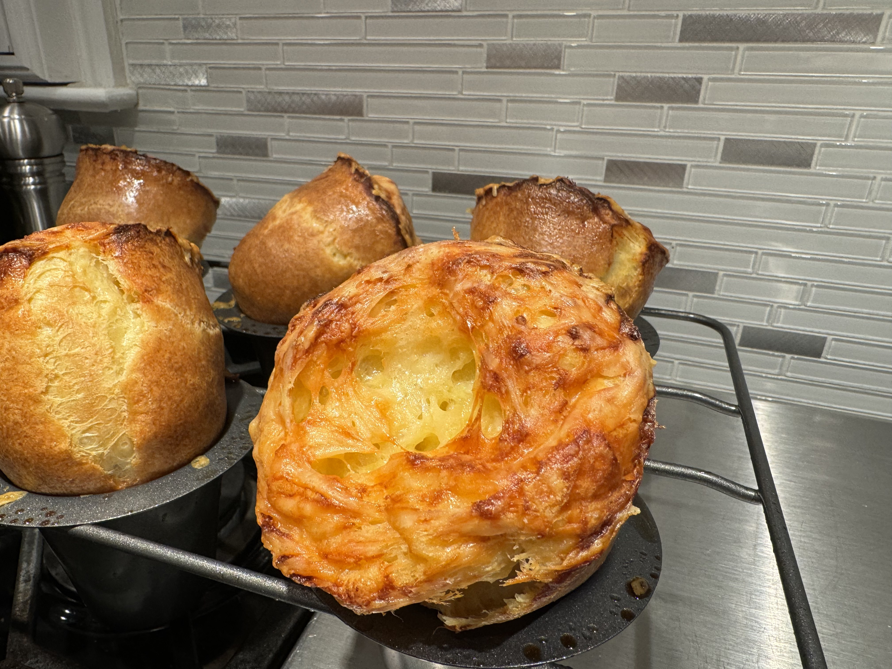

Popovers

Yield 12 Servings
30mins active, 1h20m total
Tip: Popovers can also be topped with caramelized onion, garlic and diced bacon instead of the cheese.
Ingredients
- 4 cups all purpose flour
- 10 ounces grated Gruyere (2-1/4 cups)
- 8 large eggs
- 4 cups milk
- 1 tablespoon plus 2 teaspoons salt
- Non-stick vegetable oil spray
Steps
- Place popover pan in the oven and heat to 350° F.
- Place flour and salt in a fine sieve and sift onto a wax paper.
- In a small saucepan, heat milk until bubbles appear around edges. In a large bowl, whisk eggs until frothy.
- Slowly whisk in hot milk. Set aside.
- Whisk dry ingredients into egg mixture.
- Stir until almost smooth.
- Remove popover and spray with non-stick vegetable spray. Fill each cup with batter at least three-quarters full.
- Top each popover with grated Gruyere.
- Place a baking sheet on the rack below to catch any drips.
- Bake 15 minutes.
- Rotate the pan 180° so they rise evenly. Bake for 35 minutes more.
- Invert the pan and remove popovers. Serve immediately.